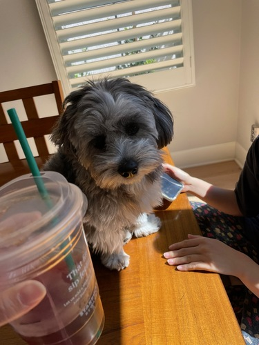
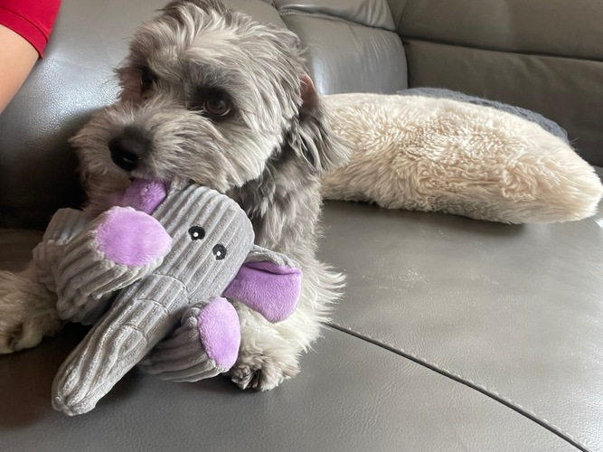
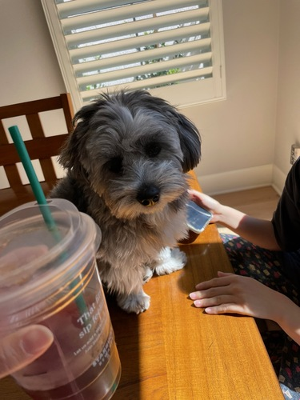
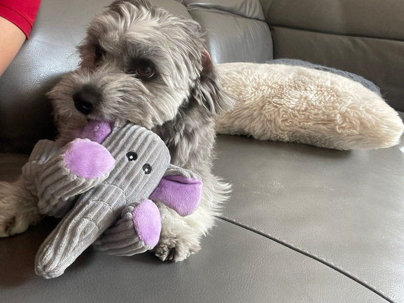

Sarah Yae
My name is Sarah Yae and I am a 20 year old Korean American who grew up in Irvine, California. My family immigrated to the states when I was around 7 years old and I have attended great schools in California from the third grade including Canyon View Elementary School, Sierra Vista Middle School, and Northwood High School all located in the beautiful city of Irvine, California. I am currently attending the University of Riverside, California pursuing a major in business economics.
During my last two years at the University of California, Riverside, I have taken a lot of different courses to figure out what I am passionate about, as well as have an interest and talent at. I have taken history classes, numerous English classes, religion classes, computer science classes, and even psychology classes to see if any subjects would catch my eye. Currently, I am interested in computer science, history, and philosophy and plan to take more courses regarding these subjects in my next years in the university.
My name is Sarah Seungyeon Yae and I am a 19 year old Northwood High School graduate attending the University of California, Riverside studying administrative studies. I am passionate about dancing, music, volunteering, and writing. I held a leadership position at the Northwood High School dance team as a fourth year member while also dancing at the Pacific Dance studio regularly. I also volunteered at Culverdale Elementary School with the Emerging Leaders program at America on Track for three years with upper elementary schoolers who have taught me patience and perspective. Additionally, I learned how to play the violin in my school orchestra for 7 years, eventually landing an opportunity to be a member of the Southern California Orchestra. I was also involved in Northwood High School's Marching Band and the Jazz Band for two semesters. I am passionate, proactive, organized, and thrilled for new opportunities to serve my community! am passionate about dancing, volunteering, spending time with my family, and writing. I held a leadership position at the Northwood HS dance team as a fourth year member while also dancing at dance studios regularly from the age of 4. Additionally, I volunteered at Culverdale Elementary School with the Emerging Leaders program at America on Track for three years with elementary schoolers who have taught me patience and perspective. I have also participated in many volunteer opportunities during my high school days, including being in a mentor mentee program in the Culverdale Elementary School for three years being a mentor to elementary school students from ages 7 all the way to 12 years old. It was certainly a rewarding Furthermore, I participated in my school orchestras since the fourth grade and fell in love with the violin which lead me to actively practice and embrace new opportunities like performing with the Southern California Orchestra. I am currently attending the University of California, Riverside working toward my Bachelor's degree in Administration Studies while exploring other subjects my university offers. I am passionate, proactive, organized, and thrilled for new opportunities to serve my community.
Experience
Hostess
• Checked in guests at the front
• Handled reservations with guests
• Experience with customers and general service
Cashier and Associate
• Responsible for weighing and cashing out customers
• Opened and closed the store
Team Member
• Helped prepare ingredients throughout the day
• Served millions of customers with quality food
• Created a friendly and welcoming enviornment for guests
• Assisted with preping the kitchen
Education
UC Riverside
Northwood High School
Sierra Vista Middle School
Portfolio




 